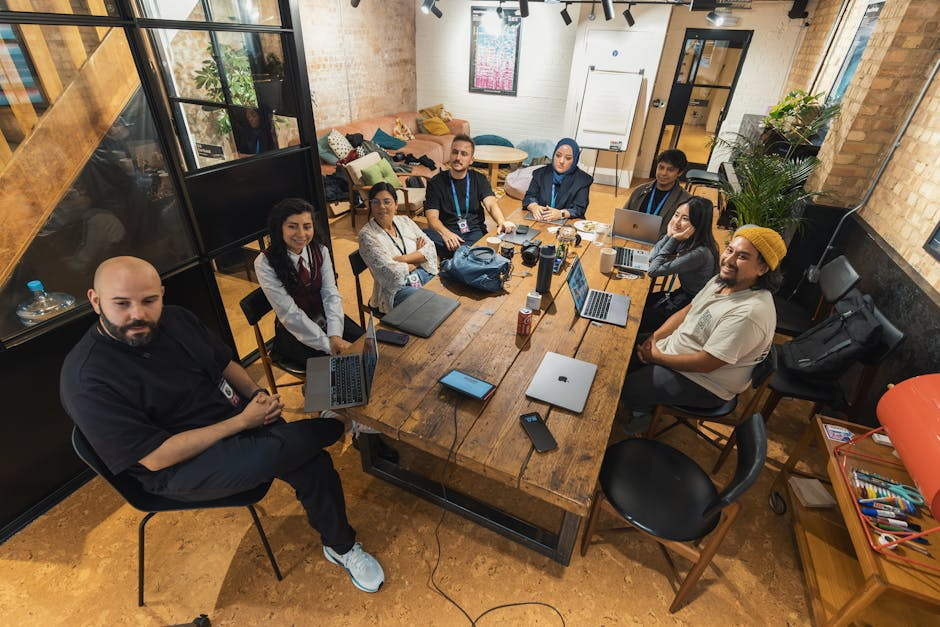

Approfondimenti e inchieste: la tua lente sul mondo contemporaneo.
Overfrettech ti guida attraverso le notizie di attualità con reportage esclusivi ed editoriali incisivi. Scopri l'informazione che va oltre la superficie.
Il rigore dell'informazione indipendente
Overfrettech è il tuo portale di riferimento per orientarti nel complesso panorama delle notizie di attualità. Selezioniamo e promuoviamo i migliori contenuti giornalistici, focalizzandoci su inchieste approfondite ed editoriali che stimolano il pensiero critico.
La nostra missione è portare alla luce le dinamiche sociali e politiche che plasmano il nostro tempo, offrendo ai lettori strumenti per comprendere la realtà oltre i titoli di prima pagina. Collaboriamo per diffondere il giornalismo d'autore e l'analisi politica di altissimo livello.

La voce dei lettori
Cosa dicono del nostro approccio all'informazione
"Le inchieste proposte offrono sempre uno spunto di riflessione inedito. Un punto di riferimento essenziale per chi cerca giornalismo di qualità e non si accontenta dei titoli."
— Marco V., 2026
"L'analisi politica è sempre puntuale e mai banale. Finalmente un approccio serio alle notizie di attualità che aiuta a comprendere le dinamiche del potere."
— Elena R., 2026
"I reportage mi hanno permesso di scoprire realtà che i media tradizionali spesso ignorano. Lettura imprescindibile per chi vuole restare informato."
— Giovanni T., 2026
Le nostre coordinate editoriali
Cosa troverai nelle nostre selezioni
Notizie di Attualità
Aggiornamenti costanti sui fatti salienti e le vicende più rilevanti del panorama nazionale e internazionale, curati per garantirti un'informazione tempestiva e libera da sensazionalismi.
Analisi Politica ed Editoriali
Approfondimenti critici firmati da esperti del settore e grandi firme. Decodifichiamo gli eventi politici per aiutarti a comprendere le strategie, i retroscena e le conseguenze delle decisioni di potere.
Reportage e Inchieste
Giornalismo investigativo sul campo. Promuoviamo storie inedite, indagini rigorose e testimonianze dirette per svelare verità nascoste e documentare la realtà senza filtri.
Domande Frequenti
Chiarimenti sul nostro servizio
Che tipo di contenuti promuovete?
Promuoviamo principalmente notizie di attualità, inchieste giornalistiche, reportage esclusivi ed editoriali di approfondimento politico e sociale, selezionati per il loro valore informativo.
Siete una testata giornalistica indipendente?
Overfrettech opera come portale promozionale indipendente. Non redigiamo le notizie direttamente, ma selezioniamo e aggreghiamo i migliori contenuti dalle principali riviste di attualità, come L'Espresso.
Come vengono selezionate le inchieste?
Scegliamo inchieste e reportage basandoci sul rigore giornalistico, sull'impatto sociale della tematica trattata e sulla capacità di offrire prospettive originali e documentate sui fatti.
Posso abbonarmi alle riviste tramite questo sito?
Questo sito ha uno scopo puramente promozionale e informativo. Le eventuali sottoscrizioni, abbonamenti o acquisti di contenuti avvengono esclusivamente sui siti ufficiali dei nostri partner editoriali.
Con quale frequenza aggiornate i suggerimenti di lettura?
Le nostre selezioni di notizie di attualità, analisi politica e reportage vengono aggiornate regolarmente per seguire l'evoluzione dei principali eventi mondiali e le uscite editoriali più significative.
Richiedi informazioni
Sei interessato a scoprire di più sulle nostre selezioni editoriali o sulle inchieste che promuoviamo? Compila il modulo per ricevere aggiornamenti sulle tematiche di attualità e analisi politica curati da Overfrettech.
Sede Redazionale Partner
Via Cristoforo Colombo, 90
00147 Roma (RM)